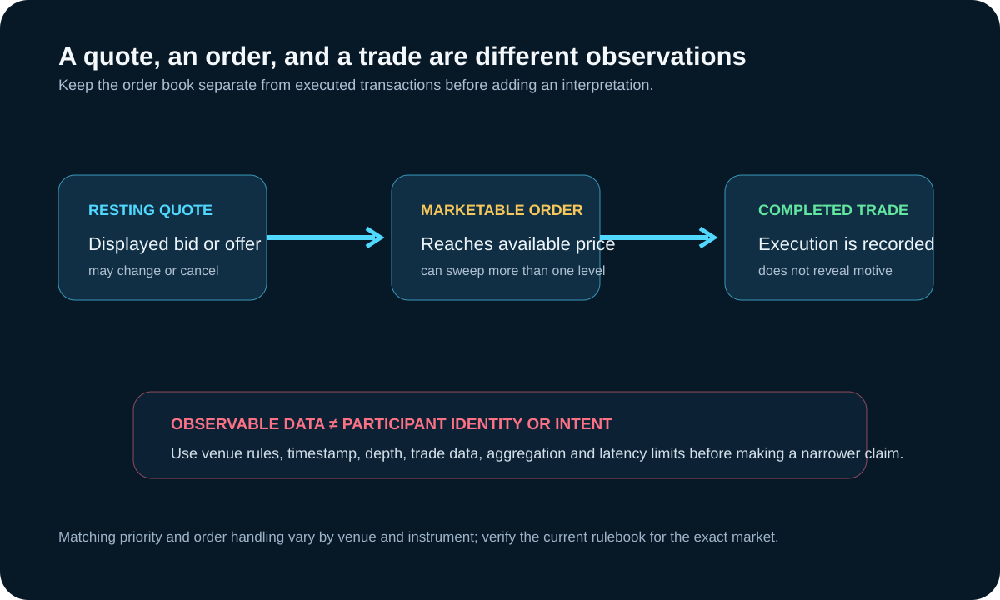

Market Microstructure: Orders, Quotes, Trades, and Price Formation
Updated September 19, 2026
Market microstructure studies how trading rules, order types, quotes, matching, and participant constraints turn buying and selling decisions into transactions. It explains the mechanism around a price move; it does not let an observer identify a trader's motive from a candle or one order-book snapshot.

Quotes are not trades
A limit order can add displayed liquidity at a specified price. A marketable order can execute against available resting orders. Quotes may be added, modified, canceled, partially filled, or fully executed, so displayed size is conditional rather than a promise to remain.
Price changes and the order book
When available quantity at the best price is consumed or removed, the best bid or offer can move to another level. The price impact of an order depends on its size relative to executable depth, matching rules, latency, and concurrent order activity. “Large candle” is an outcome, not proof of who caused it.
Order instructions have tradeoffs
| Instruction | Primary control | Main risk |
|---|---|---|
| Market order | Execution priority | Execution price can differ from the displayed quote. |
| Limit order | Worst acceptable limit price | The order may not execute. |
| Stop order | Triggers an order after a specified condition | Trigger and execution price can differ; handling varies by venue and broker. |
What the data can support
- Quotes can show displayed supply and demand at recorded moments.
- Trades show executions, not the full reason behind them.
- Repeated replenishment can be observed, but participant identity or intent requires stronger evidence.
- Spread, depth, and cost-to-trade measures describe different parts of execution quality.
A disciplined review
- Name the venue, instrument, contract, session, and feed.
- Separate order-book events from completed trades.
- Measure the relevant size across multiple levels, not only top of book.
- Record data gaps, aggregation, and latency.
- Treat motive labels such as accumulation, spoofing, or liquidation as unverified unless evidence supports them.
Continue with market liquidity basics for spread, depth, and cost-to-trade measurement.
Sources, scope, and change risk
Reviewed September 19, 2026 against the following first-party or regulatory sources:
Order handling, matching priority, stop behavior, market-data depth, and trading hours differ by venue, instrument, broker, and platform. Verify the current rulebook and order ticket for the exact market.